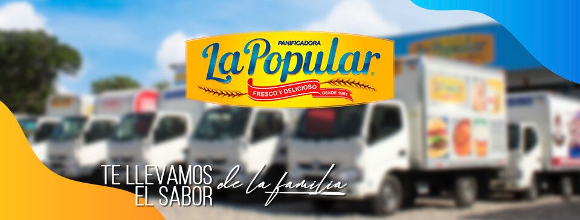

Panificadora La Popular, ubicada en La Entrada, Copán, es reconocida por ofrecer una amplia variedad de productos de panadería y repostería de alta calidad. Fundada el 15 de septiembre de 1981 por el empresario José Amancio López, la empresa comenzó con recursos limitados y ha crecido significativamente desde entonces.
nuestros productos se distribuyen en supermercados como Maxi Despensa y Despensa Familiar, así como en pulperías y mini
supermercados locales. Para aquellos interesados en vender sus productos, no hay una cantidad mínima de compra requerida;
un agente de ventas puede visitar su negocio si se encuentra dentro de la zona de cobertura.
